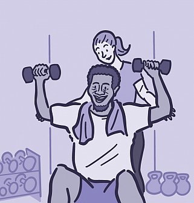
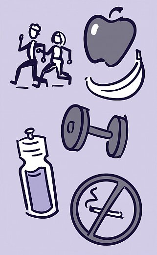

12 WHO tips for good health
1. Follow a healthy diet.
2. Stay physically active, daily and each in their own way.
3. Get vaccinated
4. Do not consume tobacco in any of its forms.
5. Avoid alcohol consumption or reduce it.
6. Manage stress for better physical and mental health.
7. Maintain good hygiene.
8. Do not drive at excessive speed or under the influence of alcohol.
9. Fasten your seat belt in the car and wear a helmet when riding a bike.
10. Maintain safe sexual practices.
11. Undergo regular medical check-ups.
12. Breastfeeding babies is the best for them.
